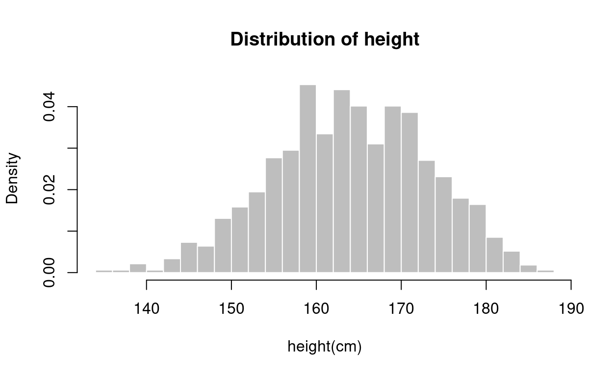
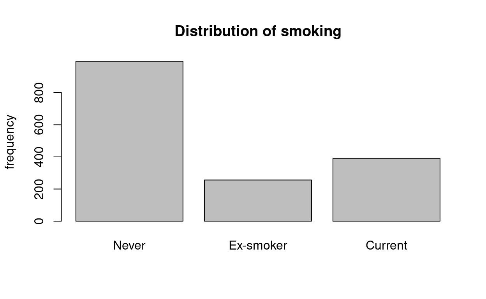
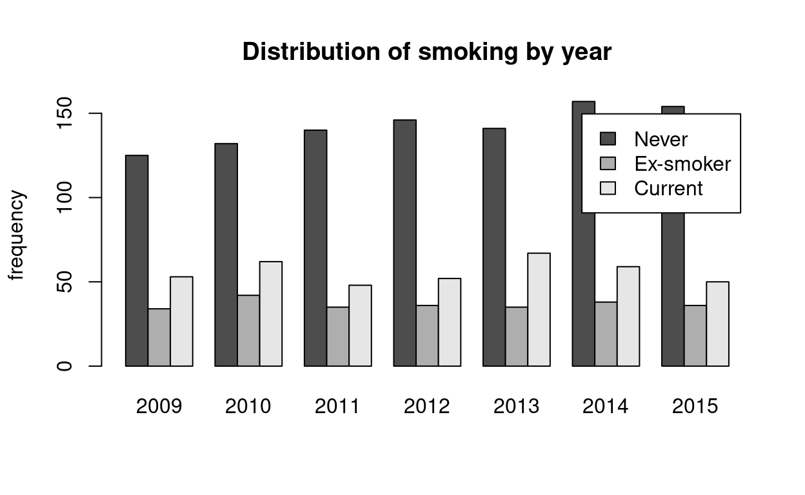
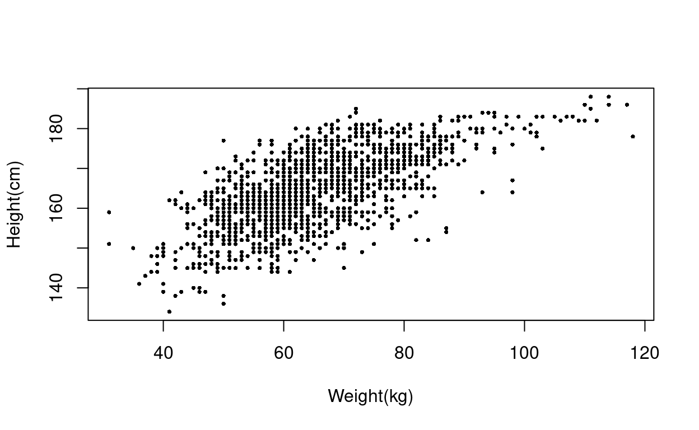
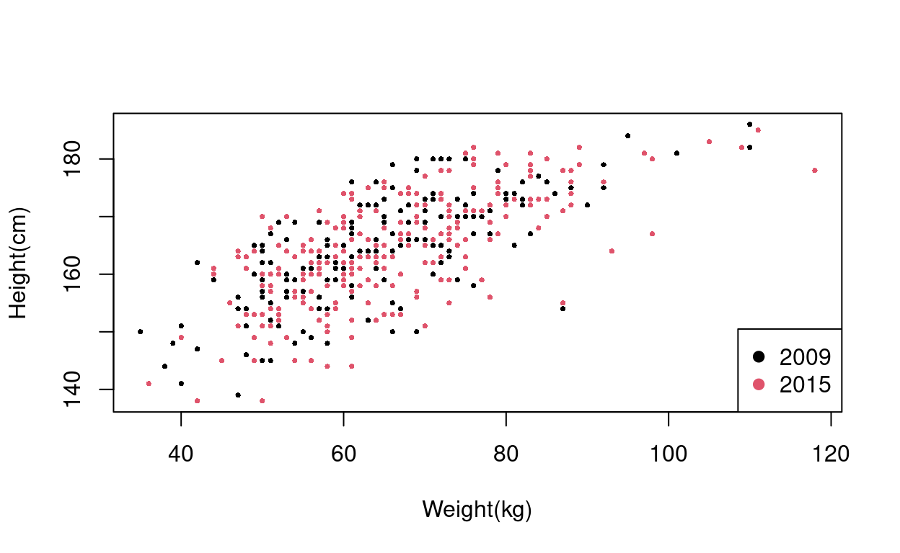
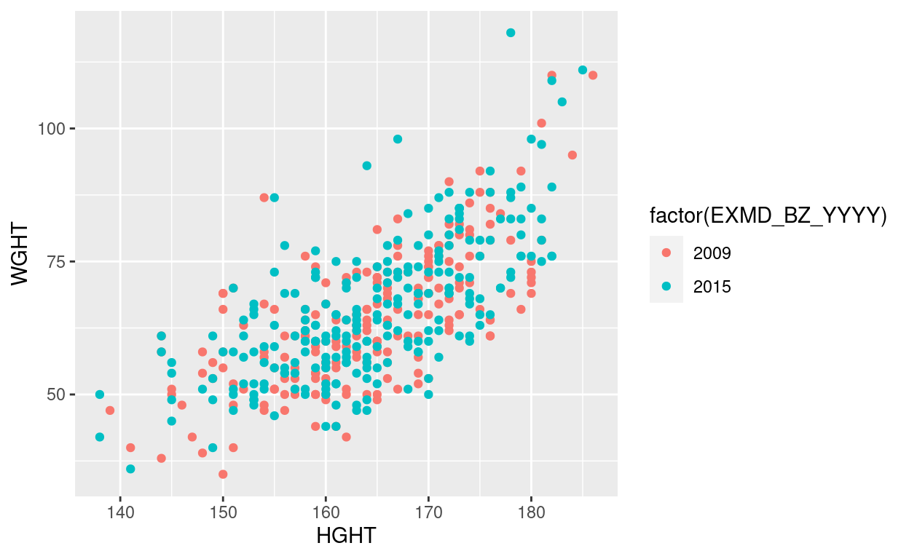
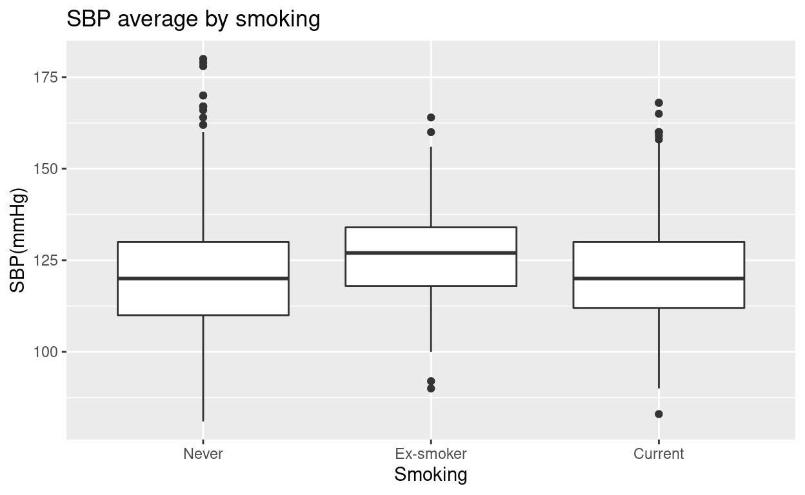
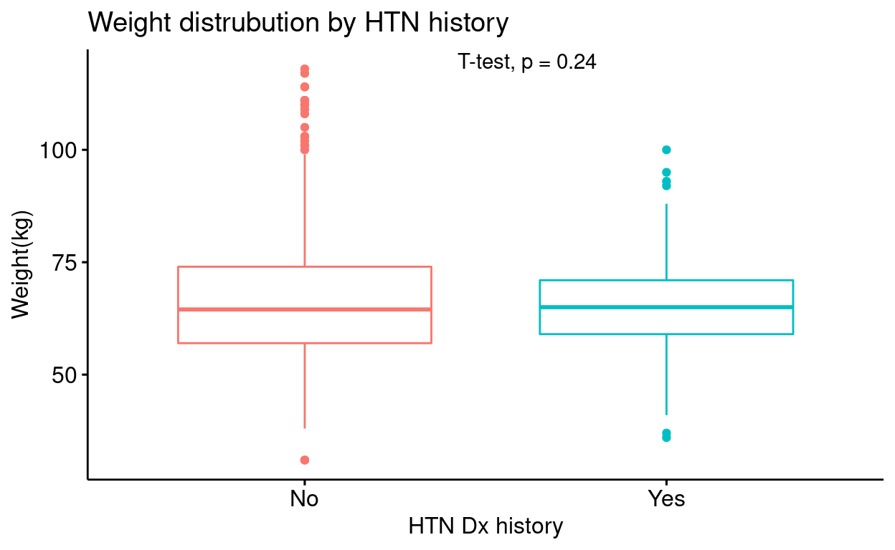

이번 시간에는 R을 이용해서 데이터와 통계 분석 결과를 한 눈에 전달할 수 있는 그래프를 만들 것이다. 예제 데이터로 지난 시간에 사용한 건강검진 데이터를 이용한다.
data <- read.csv("https://raw.githubusercontent.com/jinseob2kim/R-skku-biohrs/main/data/example_g1e.csv")
rmarkdown::paged_table(head(data))
1. Base 함수 이용하기
R에서 기본적으로 제공하는 함수만으로도 간단한 그래프를 그릴 수 있다.
Histogram
연속형 데이터를 히스토그램으로 나타내보자.
hist(data$HGHT, main="Distribution of height", xlab="height(cm)")

breaks=n 옵션을 이용해서 계급구간의 수를 설정하고, freq=F 옵션을 이용하면 y축을 빈도수가 아닌 확률밀도로 표시할 수 있다. 그래프의 색도 간단하게 설정할 수 있다.
hist(data$HGHT, main="Distribution of height", xlab="height(cm)",
breaks = 30, freq=F, col="grey", border="white")

Barplot
히스토그램과 유사하지만, X축에 표현하고자 하는 변수가 이산형 변수일 때는 빈도수를 바 그래프로 나타낼 수 있다. table() 함수를 이용해 빈도표를 만들고, 바 그래프로 나타낸다.
1 2 3
995 256 391 barplot(table, main="Distribution of smoking", names.arg=c("Never", "Ex-smoker", "Current"), ylab="frequency")

연도에 따른 흡연 여부의 분포를 하나의 그래프로 나타낼 수 있다. beside=T 옵션을 사용하면 적층형 그래프가 그룹형 그래프로 바뀐다.
2009 2010 2011 2012 2013 2014 2015
1 125 132 140 146 141 157 154
2 34 42 35 36 35 38 36
3 53 62 48 52 67 59 50barplot(table, main="Distribution of smoking by year", ylab="frequency",
legend=c("Never", "Ex-smoker", "Current"))

barplot(table, main="Distribution of smoking by year", ylab="frequency",
legend=c("Never", "Ex-smoker", "Current"), beside=T)

Boxplot
범주형 변수(흡연 여부, X축)에 따른 연속형 변수(수축기 혈압, Y축)의 분포를 나타내는 데는 박스 그래프를 이용할 수 있다.
boxplot(BP_SYS ~ Q_SMK_YN, data = data, names=c("Never", "Ex-smoker", "Current"),
main="SBP average by smoking", ylab="SBP(mmHg)", xlab="Smoking")

Scatter plot
두 연속형 변수 간의 관계는 산점도로 한 눈에 보여줄 수 있다. pch=n 옵션은 점의 모양, cex=n 옵션은 점의 크기를 지정한다.
plot(HGHT ~ WGHT, data=data,
ylab="Height(cm)", xlab="Weight(kg)",
pch=16, cex=0.5)

범주형 변수에 따른 점의 분포를 표현하고자 할 때는 점의
색깔(col= 옵션)로 구분해서 표현할 수 있다. 2009년과 2015년에
실시한 검사에서 수검자의 신장, 체중 분포에 차이가 있는지
확인해보자.
또, legend() 함수를 이용하면 범례에 사용될 옵션을 따로
설정할 수 있다.
data2 <- data %>% filter(EXMD_BZ_YYYY %in% c(2009, 2015))
plot(HGHT ~ WGHT, data=data2, col=factor(EXMD_BZ_YYYY),
ylab="Height(cm)", xlab="Weight(kg)",
pch=16, cex=0.5)
legend(x="bottomright", legend=c("2009", "2015"), col=1:2, pch = 19)

Line plot
plot() 함수에 type=“l” 옵션을
사용하면 선 그래프를 그릴 수 있다.
summarize 함수를 이용해 연도에 따른 흡연자
비율(Q_SMK_YN=3)을 계산한 뒤, 선 그래프로 표현해보자.
table <- data %>% group_by(EXMD_BZ_YYYY) %>%
summarize(smoker= mean(Q_SMK_YN==3, na.rm=T))
print(table)
# A tibble: 7 × 2
EXMD_BZ_YYYY smoker
<int> <dbl>
1 2009 0.25
2 2010 0.263
3 2011 0.215
4 2012 0.222
5 2013 0.276
6 2014 0.232
7 2015 0.208plot(table$EXMD_BZ_YYYY, table$smoker, type="l",
xlab="Year", ylab="prop of current smoker")

2. ggplot2 이용하기
다음으로 소개할 것은 R을 이용한 데이터 시각화에 가장 흔히 사용 되는 ggplot2 패키지이다.
install.packages("ggplot2")
library(ggplot2)
Scatter plot
앞에서 만들었던 산점도를 ggplot2를 이용해 다시 만들어보며 ggplot의 기본 문법을 이해해 보자.
ggplot 문법의 첫번째 요소는 시각화할 데이터, x축과 y축 변수, 기하학적 object의 모양, 색, 크기를 지정하고 변수의 스케일을 결정하는 aesthetic mapping이다.
위 코드를 통해 기본적인 그래프의 배경이 그려진다. 여기에 + 연산자를 이용해 기하학적 object를 추가한다. + 연산자는 magrittr에서의 %>%와 같이 ggplot2 함수들을 연결해주는 역할을 한다.
ggplot(data=data2, aes(x=HGHT, y=WGHT, col=factor(EXMD_BZ_YYYY))) +
geom_point()

ggtitle(), xlab(), ylab() 함수를 이용해 각각 그래프 제목, X축 라벨과 Y축 라벨을 추가할 수 있다. scale_color_manual() 함수를 이용하면 범례에 사용될 옵션들을 지정할 수 있다.
ggplot(data=data2, aes(x=HGHT, y=WGHT, col=factor(EXMD_BZ_YYYY))) +
geom_point() +
ggtitle("Height and weight in year 2009 and 2015") + xlab("Height(cm)") + ylab("Weight(cm)") +
scale_color_manual(
values = c("orange", "skyblue"),
labels = c("Year 2009", "Year 2015"),
name = "Exam year")

ggplot 문법의 장점은 + 연산자를 이용해서 기존 그래프
위에 새로운 요소를 추가해서 덧씌우는 것이 용이하다는 점이다.
위의 산점도에 geom_smooth() 함수를 추가하면 그래프 위에
추세선을 덧씌울 수 있다. 이때, aes(col=) 옵션을
ggplot() 함수에서 제외하고 geom_point() 함수 내로 이동시키면, aes(col=)
옵션은 geom_point object에만 영향을 미치고 geom_smooth object는 영향을
받지 않게 된다. 마찬가지로 각 object 함수 내에 지정된
alpha(투명도), size,
color 옵션은 해당 object에만 영향을 미친다.
ggplot(data=data2, aes(x=HGHT, y=WGHT)) +
geom_point(aes(col=factor(EXMD_BZ_YYYY)), alpha=0.5) +
ggtitle("Height and weight in year 2009 and 2015") + xlab("Height(cm)") + ylab("Weight(cm)") +
scale_color_manual(
values = c("orange", "skyblue"),
labels = c("Year 2009", "Year 2015"),
name = "Exam year") +
geom_smooth(color="brown", size=0.8)

Boxplot
ggplot의 문법을 이해하고 나면 이를 응용해서 다양한 그래프를 그릴 수
있다.
앞서 만들었던 흡연 여부에 따른 수축기 혈압의 분포 그래프를 다시 만들어
보자.
data2 <- data %>% filter(!is.na(Q_SMK_YN))
ggplot(data=data2, aes(x=factor(Q_SMK_YN), y=BP_SYS)) +
geom_boxplot() +
ggtitle("SBP average by smoking") + ylab("SBP(mmHg)") + xlab("Smoking") +
scale_x_discrete(labels=c("Never", "Ex-smoker", "Current"))

여기에 하나의 변수를 더 추가해서, facet으로 구분된 그래프를 만들 수 있다.
data2 <- data2 %>% filter(!is.na(Q_PHX_DX_HTN))
ggplot(data=data2, aes(x=factor(Q_SMK_YN), y=BP_SYS)) +
geom_boxplot() +
ggtitle("SBP average by smoking") + ylab("SBP(mmHg)") + xlab("Smoking") +
scale_x_discrete(labels=c("Never", "Ex-smoker", "Current")) +
facet_wrap(~Q_PHX_DX_HTN, labeller=label_both)

facet_grid를 이용해 2X2 grid 형태로 그래프를 그릴 수 있다. 고혈압 과거력 변수에 더해, 당뇨 과거력 변수에 따라서도 구분해서 그래프가 나타난다. labeller 함수를 사용해 facet의 label도 원하는 대로 설정할 수 있다.
data2 <- data2 %>% filter(!is.na(Q_PHX_DX_DM))
HTN.labs <- c("No HTN", "HTN")
names(HTN.labs) <- c("0", "1")
DM.labs <- c("No DM", "DM")
names(DM.labs) <- c("0", "1")
ggplot(data=data2, aes(x=factor(Q_SMK_YN), y=BP_SYS)) +
geom_boxplot() +
ggtitle("SBP average by smoking") + ylab("SBP(mmHg)") + xlab("Smoking") +
scale_x_discrete(labels=c("Never", "Ex-smoker", "Current")) +
facet_grid(Q_PHX_DX_DM~Q_PHX_DX_HTN,
labeller = labeller(Q_PHX_DX_HTN = HTN.labs, Q_PHX_DX_DM = DM.labs))

Barplot
앞서 만들었던 바 그래프도 ggplot 패키지를 이용하면 table 변환 과정 없이 바로 그릴 수 있다.
ggplot(data=data2, aes(x=factor(Q_SMK_YN))) +
geom_bar(fill="grey", color="black") +
ggtitle("Distribution of smoking") + xlab("Smoking") +
scale_x_discrete(labels=c("Never", "Ex-smoker", "Current"))

연도에 따른 흡연 여부의 분포도 table 변환 과정 없이 그릴 수 있다. geom_bar()의 position=‘fill’ 옵션을 설정하면 100% 누적 비율 바 그래프가 그려진다.
ggplot(data=data2, aes(x=EXMD_BZ_YYYY, fill=factor(Q_SMK_YN))) +
geom_bar(position="fill", color="grey") +
ggtitle("Distribution of smoking by year") + xlab("Year") + ylab("proportion") +
scale_fill_manual(
values = c("orange", "skyblue", "navy"),
labels = c("Never", "Ex-smoker", "Current"),
name = "Smoking") +
scale_x_continuous(breaks=2009:2015)

누적 비율이 아닌 count를 나타내고 싶다면 geom_bar()의 옵션을 position=‘stack’으로 변경한다. 적층형 그래프가 아닌 그룹형 그래프로 나타내고 싶다면 position=‘dodge’로 변경한다.
그래프의 X축과 Y축 위치를 뒤집고 싶을 때는 coord_flip() 함수를 이용한다. X축과 Y축의 위치가 서로 바뀌는데, 축의 scale과 label을 다시 설정하지 않아도 되기 때문에 편리하다.
ggplot(data=data2, aes(x=EXMD_BZ_YYYY, fill=factor(Q_SMK_YN))) +
geom_bar(position="dodge", color="grey") +
ggtitle("Distribution of smoking by year") + xlab("Year") + ylab("count") +
scale_fill_manual(
values = c("orange", "skyblue", "navy"),
labels = c("Never", "Ex-smoker", "Current"),
name = "Smoking") +
scale_x_continuous(breaks=2009:2015) +
coord_flip()

3. ggpubr 이용하기
ggpubr 패키지는 ggplot2의 문법을 활용해 논문 작성을 위한 데이터 시각화에 최적화된 기능을 제공하는 패키지이다.
install.packages("ggpubr")
library(ggpubr)
ggpubr 패키지를 이용하면 그래프 위에 자동으로 p-value나 통계적 유의성을 표시할 수 있고, 여러 종류의 그래프를 한 페이지로 보여주도록 배열할 수 있다.
Histogram
ggpubr 패키지의 기본 문법을 활용해서 히스토그램을 그려보자. 고혈압 병력이 있는 군과 없는 군 간에 체중 분포에 차이가 있을지 확인해본다.
data3 <- data2 %>% mutate(HTN = as.factor(ifelse(Q_PHX_DX_HTN==1, "Yes", "No")))
p <- gghistogram(data=data3, x="WGHT",
color="HTN", fill = "HTN", add="mean")
plot1 <- ggpar(p,
main="Weight distrubution by HTN history",
xlab="Weight(kg)",
legend.title="HTN Dx history")
print(plot1)

Boxplot
같은 분포를 박스 그래프로도 나타낼 수 있다. 여기에 stat_compare_means() 함수를 활용하면, 고혈압 병력군 간 체중 평균에 통계적으로 유의한 차이가 있는지 확인할 수 있다.
p <- ggboxplot(data=data3, x="HTN", y="WGHT", color="HTN") +
stat_compare_means(method = "t.test", label.x.npc = "middle")
plot2 <- ggpar(p,
main="Weight distrubution by HTN history",
ylab="Weight(kg)",
xlab="HTN Dx history",
legend="none")
print(plot2)

세 개 이상의 범주로 나누어졌을 때도 마찬가지로 통계적 유의성을 검정할 수 있다. scale_x_discrete() 함수의 사용에서 확인할 수 있듯이, ggpubr 패키지는 ggplot의 문법을 기반으로 하고 있다.
my_comparisons <- list(c("1", "2"), c("2", "3"), c("1", "3"))
p <- ggboxplot(data=data3, x="Q_SMK_YN", y="WGHT", color="Q_SMK_YN") +
stat_compare_means(comparisons = my_comparisons) +
stat_compare_means(label.y = 150) +
scale_x_discrete(labels=c("Never", "Ex-smoker", "Current"))
plot3 <- ggpar(p,
main="Weight distrubution by smoking",
ylab="Weight(kg)",
xlab="Smoking",
legend="none")
print(plot3)

Scatter plot
위에서 여러번 만들었던 신장과 체중의 산점도를 다시 그려보자. add = “reg.line” 옵션을 이용해 그래프 위에 추세선을 그린 뒤, stat_cor() 함수로 두 변수 간의 상관계수와 p value를 구할 수 있다.
p <- ggscatter(data=data3, x="HGHT", y="WGHT",
add = "reg.line", conf.int = TRUE,
add.params = list(color = "navy", fill = "lightgray")) +
stat_cor(method = "pearson")
plot4 <- ggpar(p,
ylab="Weight(kg)",
xlab="Height(cm)")
print(plot4)

같은 산점도를 고혈압 병력에 따른 두 그룹으로 나누어서 다른 색으로 표현하고, 상관계수와 p-value를 따로 계산할 수도 있다.
p <- ggscatter(data=data3, x="HGHT", y="WGHT", color="HTN", alpha=0.5,
add = "reg.line", conf.int = TRUE) +
stat_cor(aes(color = HTN))
plot5 <- ggpar(p,
ylab="Weight(kg)",
xlab="Height(cm)")
print(plot5)

ggarange 함수를 사용하면 여러 개의 그래프를 한 페이지에 배열해서 보여줄 수 있다.

4. 그래프 저장하기
이렇게 만들어진 그래프는 그림 파일 또는 PPT 파일로 저장해서 편집, 공유할 수 있다.
rvg 패키지는 그래프를 편집 가능한 그림 형태로 만들어주고, officer 패키지는 그림을 microsoft PPT 파일로 저장하는 기능을 제공한다.
아래 코드를 이용해 plot_file이라는 이름의 pptx 파일을 생성하고, 순서대로 슬라이드를 추가하고, 제작한 그래프를 dml(ggobj =) 함수를 이용해 편집 가능한 그림 형태로 슬라이드에 삽입하고, plot_file.pptx 파일로 로컬 드라이브에 저장하는 일련의 과정을 실행해 보자.
plot_file <- read_pptx() %>%
add_slide() %>% ph_with(dml(ggobj = plot1), location=ph_location_type(type="body")) %>%
add_slide() %>% ph_with(dml(ggobj = plot4), location=ph_location_type(type="body")) %>%
add_slide() %>% ph_with(dml(ggobj = plot5), location=ph_location_type(type="body"))
print(plot_file, target = "plot_file.pptx")